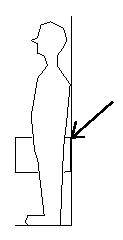

I've been cycling all my life, riding to my friends' houses when I was a kid, doing 20-odd mile rides as a teenager, and just kept going from there. From the time I was a teenager until I was in my 30's I had only ever used standard length (170mm) cranks. Then I bought a cheap racer, which happened to come with 165mm cranks. When I first tried to ride it I found it very weird. Part of it was that it was set up completely differently from my old reliable tourer. But part of it was the noticeably shorter cranks. Over time I adjusted it, replaced parts, etc, until it suited me. But the smaller cranks remained very different in feel. At first they felt so strange to me that I wanted to replace them. I was used to making bigger circles with my feet, and with the shorter cranks, my feet were suddenly constrained into a smaller radius and they turned much more quickly than I was expecting. Not that the circle was vastly smaller, only 5mm per leg! But it felt very different.
Gradually, however, I found that the smaller circles were better for me. The pedals were so much easier to spin around. Oddly enough, it seemed of most benefit on hills, allowing me to keep up my pedal speed much better. The shorter cranks won me over, and over time I have put 165mm cranks on almost all my bikes. Replacing perfectly good cranks may seem unjustifiably expensive, but I am serious about my cycling. The difference is enough to make it worth the money.
My pedalling was improved significantly by getting cranks that were only 5mm different from the ones I was using. If you're extra tall or extra short and are using 170mm cranks, your ideal crank length is probably 10mm or more different from your current cranks. If you swap to the right size, the improvement is likely to be great.
Manufacturers put the same length of cranks on all bikes because it's cheaper, not because it's the right thing for the rider. They get away with it because most people haven't tried different length cranks; many don't even realize that cranks come in different lengths.
Propelling a bike forward involves turning pedals around in a circle. For maximum efficiency, and minimum impact on the body, the diameter of the circle should be in proportion to the length of your legs. The leg is strongest at pushing when it is closest to being straight. If the cranks are too long the circle is too big for your legs, your knee will be bent too much at top part of the stroke, and you won't be able to put as much power into the upper part of the stroke. This will prevent you from spinning the pedals as fast, and will also put more stress on your knees. If you have long legs you can make a bigger circle with your feet and still keep your legs in the high power zone, and you won't have your knees too bent. If your cranks are too short for you, you won't be able to apply as much torque with them as you could with longer cranks.

Leg Length Crank Length 60 to 65cm 150mm 66 to 70cm 155mm 72 to 75cm 160mm 75 to 78cm 162.5mm 79 to 81cm 165mm 82 to 83cm 167.5mm 83 to 86cm 170mm to 172.5mm 87 to 90cm 175mm to 177.5mm 91 to 94cm 180mm 94cm plus 185mm There are two major ways to find a good crank length. The first is simply to measure your leg length and then use a chart. Measuring your leg length is easy. Take a big book and push it up into your crotch as you're standing against a wall. Make sure the back edge of the book is flat against the wall. Mark the wall at the top of the book (at the arrow in the diagram) and measure to the floor. This is your leg length. (Many cycling people call this measurement your inseam, but since this conflicts with a tailer's use of inseam, which is crotch to ankle bone, I'll just call is leg length to avoid confusion.) The chart to the right of the diagram relates leg length to crank lengths. The chart is provided by TA, who are one of the few companies that make cranks with a wide range of lengths.
The second method is to take your leg length (leg length in cm as measured above) and multiply by a constant factor to get your crank length in mm. The constant factor should be somewhere between 2.0 and 2.16 (the latter is the one recommended by Kirby Palm). Chris Juden of the CTC has a different method for finding leg length. He measures height to top of head when sitting on the floor and subtracts that from standing height (no shoes). He finds this produces a more reliable method than the "book between the legs" method described above. Yet another variation is suggested by Peter White, a framebuilder in the US. He measures the length of the leg, from top of femur to floor, in cm, and multiplies this by 1.85, to get the crank length in mm. Finding the top of the femur is the hard part. Feel along the outside of your hip to find the place where your leg joins the hip. The top of the femur is slightly above the actual joint, so if you lift your leg, the top of the femur will move back slightly. Search for this movement.
Now, these methods above yield somewhat different lengths. The chart suggests a smaller range in crank lengths than the linear method (i.e. the linear method suggests even longer cranks for taller people, and even shorter cranks for shorter people). Of course, the chart is provided by TA and you can say that they made up the chart so that it showed that the lengths of cranks they make covers all adults.
Even so, the chart isn't so far off for tall people (e.g. 94cm legs yields 185mm cranks on the chart, but 188mm cranks using a multiplier of 2.0) but there are large discrepancies for small people (68cm legs yields 155mm on the chart, but 147mm using a multiplier of 2.16). I think the main thing that this suggests is that the TA chart, which at first glance seems so radical in suggesting either very long or very short cranks, is in fact on the conservative side, and that short people especially might consider getting even shorter cranks than those recommended by the chart.
If you try out a bike with the "ideal" crank length, you may find that you hate it. I would recommend that you stick with it, based on my own experience of first hating and then loving 165mm cranks.
The length you'll end up with above is the ideal crank length for general road riding: racing and training. However, depending on the situation, you may want a crank length longer or shorter than this. In racing, you want a relatively high cadence in order to be able to be able to follow breakaways and maintain a high power output while not overly tiring your mucles or joints (see Optimum Cadence). In training you want to practice high cadence work to get ready for races.
In mountain biking, spinning seems less important. MTB races and rides usually don't involve much sprinting, and usually aren't very long, so a lower cadence that optimizes oxygen usage is preferred. Because of this, many people prefer to have longer cranks for MTBing. Adding 5mm to the crank length can give extra leverage without hampering the spin too much.
Similarly, in time trialling you may want a longer crank, since your cadence will generally be lower. I've heard 2.5mm suggested as a possible increment.
Touring is not an intense exercise so you don't tend to spin as fast as your would while training. In addition you can end up climbing very steep long hills, so you may want to consider somewhat longer cranks for touring. On the other hand, you'll be riding for many hours in a day, day after day, and thus you want to take good care of your knees, so make sure you don't overdo the length.
In contrast, in track riding, you have a fixed gear, so speed is in large part down to how fast you can spin. Also, hitting a pedal on the floor becomes a real possibility. Thus shorter cranks are generally used for track racing. You may think of trying 2.5 to 5mm less for this use. Shorter cranks are often used on fixed gear road riding as well, both to allow you to spin faster and to go around corners without hitting your pedal against the ground.
Some people have legs of significantly different lengths. This may be something they've had since birth, or it may the the result of an accident (say, a badly broken leg). If you can manage to measure the length of your legs, you can use one of the methods above to calculate the crank length that would work for each leg. I would say that if this length is 2.5mm or less, I wouldn't worry about it, just get two cranks of the same length. If the difference is larger, then getting two different length cranks could improve your cycling quite a bit. Buying two sets of cranks to get left and right a different size may well be prohibitively expensive. This is where a custom crank maker comes in. See the bottom of this page for some sources.
Women, especially shorter ones, can have difficulty finding cranks that fit. The problem is far worse for kids, especially when their parents put them on adult bikes (with 170mm cranks!) as soon as their feet reach the pedals with the saddle is at its lowest height. This results in their legs being extremely bent when the pedal is at the top of the stroke, which surely can't be good for growing legs.
There are a few solutions to this problem. For smaller kids the best solution is a proper kid's bike, like those made by Islabikes. For older kids and teenagers, one option is to buy a small-sized adult bike and get shorter cranks for it. My officemate did this, getting Highpath Engineering to shorten some budget cranks to a sensible length.
Kids on the back of tandems have a particular problem. Often tandems have quite small rear sections, so it's tempting to take your kid on the back of the tandem as soon as he/she can reach the pedals. Replacing tandem cranks is even more expensive than replacing regular cranks, but it's essential if you want to keep your kids' knees in good shape. St John St Cycles make some super kid-sized cranks for the backs of tandems: they have holes drilled at 115 and 140mm. Alternatively, at least one custom crank maker, Heiko Brechtel of customcranks.de, does double drilled tandem rear cranks in whatever lengths you want.
You can get kids on tandems even earlier, if you get a childback tandem, which has a very small back seating area. However, be warned that many tandems that are promoted as childback still have 170mm cranks in the back, which are completely unsuitable for children! In fact, the only tandems that I've found that are available with shorter cranks are the childback versions of Thorn tandems, and even then you have to pay a bit extra. (At time of writing, the double-drilled cranks mentioned above are a £40 extra. This is an upgrade that is well worth it!) Please, parents, if you get one of these "childback" tandems with the adult-sized cranks on back, for the sake of your kids' knees, replace them or get them shortened.
As an alternative to buying completely different cranks for your kids' bikes, crank shorteners can also be used, both for tandems and regular bikes. These bolt on to the existing cranks to add pedal holes at much shorter lengths. You can get some from St John St Cycles.
I seem to have a running argument with some bike manufacturers and bike shop employees, who try to justify the one size fits all approach to cranks (170mm for road, 175mm for off-road). To back up my suggestion that crank length should be proportional to leng length, have a good look at Kirby Palm's article on cranks. This debunks all the usual objections against proportional length cranks. Note that the multiplier that he recommends is on the large side, but it still results in much shorter cranks for short people than they usually use.
Of course, I've already mentioned a couple of other people who believe in proportional length cranks. They are Peter White and Chris Juden.
More bike articlesIt can sometimes be quite a challenge to find cranks that actually fit you. The following paragraphs are meant to be only a rough guide of where you might begin your search. I make no efforts to be comprehensive.
Shimano can be a good place to start. The most expensive groupsets have the best chioce of crank lengths, which is why I have Deore XT cranks on my mountain bike: none of the lower ranges offered a 165mm crank length. Check the website to see what lengths are available. You probably won't find all sizes in your local shop, but you can get your shop to order them from the distributer. If you are not in the US, this may not be an option, as not all of the range is imported to UK. However, you can contact a bike shop in the States (like Peter White Cycles or Harris Cyclery) and get them to order the chainset and ship it over to you.
The following paragraphs describe cranks that are available in the UK. With the exception of TA cranks they can be hard if not impossible to get in the US. If you are in the US and want to get one of these cranksets, try contacting the UK bike shops to see if they will ship it over to the States. To give you an idea of cost, St John St Cycles say that shipping for a crankset would be about 15 pounds.
TA chainsets (made in France) are often the first to come to mind when people think of odd-sized chainsets. The best info I've found on TA chainsets is provided by Peter White Cycles. TA chainsets end up being very pricy, but they have a huge selection of crank lengths, and they are compatible with (at least some of) Campag and Shimano road groupsets.
St John St Cycles do their own Thorn cranks, which are available in a huge range of lengths. They are meant for touring bikes and tandems, not road bikes, having 110/70 bolt circle diameters. But let's be honest, road bike gearing (with a 52 or 53 tooth large chainring) is too high for the vast majority of cyclists anyway.
Roberts Cycles does not make cranks, but they do specialize in custom bikes for women, so they usually have a selection of short cranks in stock. Contact them for more info.
If you really can't find what you need in manufactured cranks, you may need to get them custom made. As I mentioned above, custom cranks are about the only option if your legs have quite different lengths. The only two custom crank makes I know of are Heiko Brechtel of customcranks.de and Lennard Zinn of Zinn Cycles, but there are probably more.
Finally, you can get cranks shortened, either by bolting on bits to cranks, or by drilling and tapping holes in them. You can get the bolt-on crank shorteners from St John St Cycles. They are not recommended as a solution for an adult, but as a way to accommodate the changing needs of growing kids. Permanent crank shortening (via drilling) is offered both by St John St Cycles and Highpath Engineering.